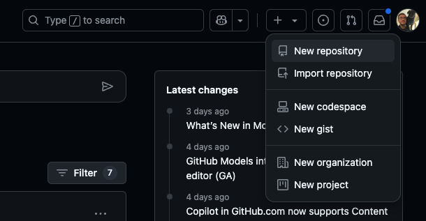
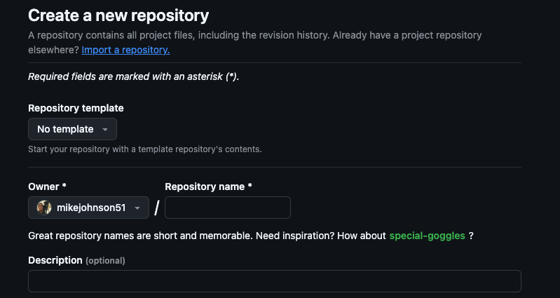
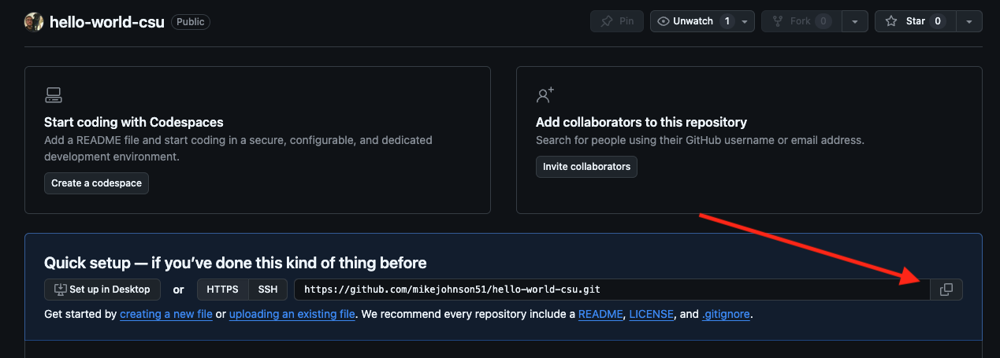
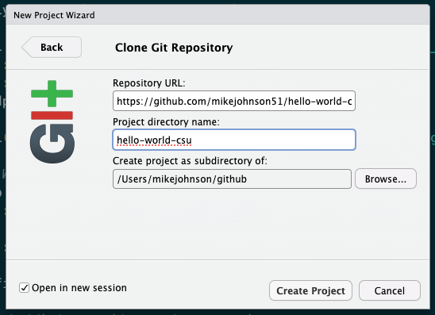
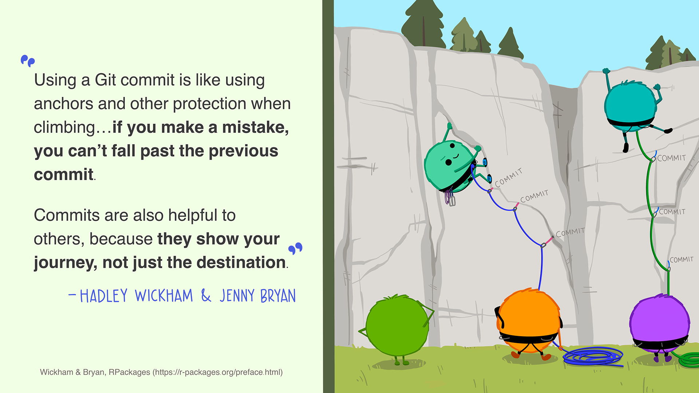

Daily Exercise 03
Your first Project
So far you have done a LOT!! You’ve installed a programming language and IDE, you’ve mastered some terminal commands, you’ve installed a version control system, and created a GitHub Account. All in the first 2 days of class!
The assignment for today is to set up your first project using the R Terminal, Github, and RStudio Projects.
For the purposes of ESS 330, the things you’ll need to do with GitHub are:
- Create new GitHub repositories (INITIALIZE) and/or copy existing ones (FORK)
- Get that repo talking with your local R/RStudio (CLONE)
- Modify files on your computer
- Push them back to your version of the repo (STAGE/COMMIT/PUSH workflow)
Create
The first thing we want to do is create a new repository on your Github account. After logging in, look in the upper right hand corner of your account for the “+” button. Click on that and select “New repository”:
This will create a new repository and prompt a new window that looks like:

Here, we can fill in the metadata for our new repo:
- Let call it:
hello-world - Give it an informative description:
My first Github Repository! - Keep it “Public”
- Initialize it with a README
- Keep .gitignore and License as NONE
- Confrim “Create repository”
Awesome! You created your own first Github Repository
Connect to RStudio
We now need to ensure that RStudio can communicate with that GitHub Repository. By doing this we will be able sync our local files with a remote copy, make changes/additions, and the publish those changes back to remote repo. This “pulling” from and “pushing” to is the basic Github workflow.
To practice this, lets walk through the steps of cloning a copy of the empty “hello-world” repo.
- first navigate to (
YOUR USERNAME/hello-world). - In a new repo, look for the quick setup option. The URL listed provides a dedicated path to the repo that RStudio can use to communicate (remember our URL based “filepaths”). Copy that link (easiest to click the clippy icon) and return to (or launch) RStudio.

- Once in RStudio, create a new version controlled project using the Github URL
File --> New Project --> Version Control --> Git
- To provide the metadata for this project lets do the following:
- Paste the URL you copied into the Repository URL section, and press TAB
- Keep the default Project directory name that matches the GitHub project
- Create the project as a sub directory of your
~/githubfolder created in the last activity - Optional: select ‘Open in new session’ (if you’re already working on stuff that you don’t want to close)

- Click create!
Congratulations! You just created a git-enabled project. You will know you are successful if you see the Git tab somewhere in your RStudio IDE (mine is next to “History” and “Environment”).
Structure your Project
To start out this project take what we learned today in lecture and construct a skeleton for a project. If you think carefully you should only need 4 terminal prompts. I will start you with the first:
mkdir dataUsing cd to navigate, add one qmd file and one R file in the correct directories. Use (touch/$null >) to create them.
Once you’ve built your skeleton, open your README.md from the RStudio file viewer and enter the following, replacing the ‘XXXX’ with your info:
# My first Project
## **Course**: ESS 330
## **Name**: XXXXX
## **Year**: XXXXX
## **Major**: XXXXX
## **OS**: XXXXXHow does your structure look compared to what we discussed in lecture? Do you have a place for data? What about images? Source Code? Docs?
Git Workflow
You know that Git is a version control software that allows us to track changes in files. You also know Github is a web platform for hosting and working with git enabled projects…
Version control is kind of weird. Not only are you keeping current files, but you are keeping past versions of your files. BUT, you dont want to archive each and every little change. Instead, your versions (think snapshots) have to be determined by you, through commits.

Armed with that idea, it is time to introduce the Git tab in RStudio. If you click on the Git tab, you will see all the files that have changed from the last commit.

- To stage files, select the empty box (under ‘Staged’) next to each file
- To select all files, click in the Git tab, and click CMND+SHIFT+A (Mac) or CRTL+SHIFT+A (Windows)
- Add your checked files by clicking Commit
- In the dialogue box, enter a brief commit message (e.g. “Initial Project Structure”) and press ‘Commit’ to stage these files to git.
Git –> Github
In order to allows Github and your .git archive to talk to each other securly, you’ll need to set up a Personal Access Token (PAT). This process needs to be done very infrequently (~90 days). To do this, in your R console enter:
## create a personal access token for authentication:
usethis::create_github_token() This will lauch a broswer were you can enter the following information:
- Describe the Use Case (e.g. “RStudio”)
- Set expire to 90 days for ease
- Generate Token
- Copy the Token and return to RStudio
With you copied Token, enter the following function changing out “your-PAT” with the copied token:
## set personal access token:
## If credentials is not installed, do you remember how to install a package?
credentials::set_github_pat("your-PAT")Once done, you can verify the tool (github) under the scope of “user” is connected with git_sitrep. Specifically you should see that Personal access token for "https://github.com": <discovered> and your associated email.
usethis::git_sitrep(tool = "github", scope = "user")Finally, with your Github account authorized, you can press the upward green push arrow in the Git Pane to “Push” your changes to GitHub.
If you receive no errors then you successfully staged, committed and pushed your project to
YOUR USERNAME/hello-world
To make sure:
Go to GitHub and refresh the repo page.
You should see the files you recently committed and the associated rendered README. If this is true. You are done - Great work!
Assignment
For this assignment submit the URL to your hello-world repository to the Canvas dropbox.
And 🎉 congrats 🎉! All the setup technical setup is done for this course and we are on to bigger and more fun things!